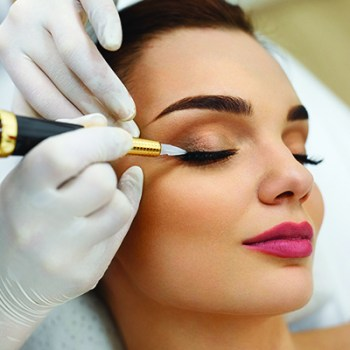

Newcrush | Kosmetika | Maisto Papildai
2020.10.29 05:11
Karjera Dovanų kortelės Lojalumo programa Pristatymas +370 618 88 860 labas@newcrush.com Prisijungti 0 Jūsų krepšelyje nėra prekių lt keyboard_arrow_down English Lietuvių kalba English Lietuvių kalba Odos priežiūra
Pagal produktą
Veido kremai
Serumai
Veido prausikliai, valikliai
Tonikai, dulksnos
Geliai ir emulsijos
Šveitikliai veidui
Veido kaukės
Akių priežiūros priemonės
Lūpų balzamai
Saulės kosmetika
BB ir CC kremai
Muilas
Rankų, nagų ir kojų kremai
Savaiminio įdegio priemonės, kremai
Makiažo valikliai
Odos priežiūros rinkiniai
Dekoratyvinė kosmetika
Priemonės prieš makiažą
Pagal paskirtį
Riebiai odai
Sausai ir dehidratuotai odai
Probleminei odai
Mišriai odai
Normaliai odai
Jautriai odai
Išsiplėtusioms poroms
Anti-aging priemonės
Kuperozinei odai
Pigmentuotai, papilkėjusiai odai
Strijoms, randams
Grybelio, žvynelinės, dermatito gydymui
Pažeistos odos atstatymui
Mamai ir vaikui
Kosmetika vyrams
Prekės ženklas
Blancrème
Boderm
Cell Fusion C
ECO by SONYA
Edible Beauty
HUBISLAB
Neal's Yard Remedies
Oxford Biolabs (TRX2)
RégimA
The Organic Pharmacy
Maisto papildaiGerai savijautai
Multivitaminai
Žuvų taukai ir omega rūgštys
Imuninei sistemai
Energijai ir protinei veiklai
Nervų sistemai ir miegui
Širdžiai ir kraujotakai
Raumenims, kaulams ir sąnariams
Virškinimui ir probiotikai
Akims
Šlapimo takams
Sportuojantiems
Vitaminai ir mineralai
Vitaminas D
Vitaminas C
Vitaminas B
Geležis
Magnis ir kalcis
Kalis
Folio rūgštis
Visai šeimai
Moterims
Vyrams
Vaikams
Besilaukiančioms ir maitinančioms
Senjorams
Menopauzei
Odai, plaukams, nagams
Odai
Plaukams
Nagams
Antioksidantai
Svorio kontrolei
Probiotikai
Prekės ženklas
Living Nutrition
Mushrooms4life
NOW
Oxford Biolabs (TRX2)
Planet Paleo
The Organic Pharmacy
Viridian
Voniai ir kūnuiPagal produktą
Kūno kremai, losjonai, aliejai
Vonios ir dušo kremai, geliai
Kvepalai, žvakės
Muilas
Pėdų ir nagų priežiūra
Vonios putos ir druska
Kūno serumai ir dulksnos
Šveitikliai kūnui
Rinkiniai kūnui
Savaiminio įdegio priemonės
Saulės kosmetika
Dezodorantai
Sausai kūno odai
Savaiminio įdegio kremas „Invisible Tan“
€ 35,95Veido ir kūno šveitiklis su rožine himalajų druska „Pink Himalayan Salt Scrub“
€ 35,95Pagal gamintoją
BetterYou
blancreme
Boderm
ECO by SONYA
The Organic Pharmacy
Plaukų priežiūraPagal produktą
Maisto papildai plaukams
Šampūnai ir kondicionieriai
Losjonai, aliejai plaukams
Balzamai plaukams
Plaukų gumytės
Plaukų formavimo priemonės
Rožių plaukų kondicionierius „Rose Conditioner“
€ 35,00Maisto papildas plaukams TRX2®
€ 66,50Stimuliuojantis šampūnas „TRX2® Stimulating Shampoo“
€ 24,95Pagal gamintoją
Oxford Biolabs (TRX2)
PHS HAIRSCIENCE®
The Organic Pharmacy
AksesuaraiAksesuarai
Daugkartinės veido kaukės
Galvos juostos
Marškinėliai
Daugkartinė veido kaukė medvilninė (tamsiai mėlyna)
€ 2,99 € 3,99Marškinėliai „Kada noriu - tada ir vasara“
€ 24,99Newcrush galvos juosta su kaspinu (mėlyna)
€ 11,99 SALE % Blogas O KAIP JAUTIESI TU? Slapukų nustatymai Slapukų nustatymai Info Būtini Nuostatos Statistika Rinkodara Neklasifikuojami
Svetainėje naudojami slapukai, kurie padeda užtikrinti jums teikiamų paslaugų kokybę. Toliau naudodamiesi mūsų svetaine, jūs sutinkate su mūsų slapukais.
Būtini
Visada aktyvūs
Kad svetainę būtų lengviau naudoti, būtinais slapukais aktyvinamos pagrindinės funkcijos, pavyzdžiui, naršymo puslapiuose ir prieigos prie svetainės apsaugotų sričių. Be šių slapukų svetainė neveiks tinkamai.
Naudojami slapukai
http://newcrush.com - CookieConsent http://newcrush.com - PHPSESSIDNuostatos
Dėl nuostatų slapukų svetainė įsimena informaciją, nuo kurios priklauso svetainės veikimas ir išvaizda, pavyzdžiui, jūsų pasirinkta kalba arba regionas, kuriame esate.
Naudojami slapukai
http://newcrush.com - ssupp_vid http://newcrush.com - ssupp_chatid http://newcrush.com - ssupp.vid http://newcrush.com - ssupp.chatidStatistika
Naudodami statistikos slapukus, kurie renka anoniminę informacija ir teikia jos ataskaitas, svetainės savininkai gali sužinoti, kaip lankytojai sąveikauja su svetaine.
Naudojami slapukai
http://newcrush.com - _ga http://newcrush.com - _gid http://newcrush.com - ssupp_visits http://newcrush.com - ssupp.visitsRinkodara
Rinkodaros slapukai naudojami lankytojams sekti daugelyje svetainių Tuo siekiama rodyti atskiram naudotojui pritaikytus ir jį dominančius skelbimus – tokie skelbimai vertingesni leidėjams ir trečiųjų šalių reklamuotojams.
Naudojami slapukai
http://newcrush.com - _gcl_au http://newcrush.com - _fbp http://newcrush.com - _gat_gtag_UA_47831945_2Neklasifikuojami
Neklasifikuoti slapukai – tai tokie slapukai, kurių klasifikavimą vykdome kartu su atskirų slapukų teikėjais.
Naudojami slapukai
http://newcrush.com - NewCrushPS-0818381a802ce83569f76d87160a242e http://newcrush.com - NewCrushPS-89152ece3f918496027ff2b4afb5b5ff http://newcrush.com - NewCrushPS-c6e9787b37fa41bc223f4f8467ef8f69 Privatumo politika ir taisyklės Išsaugoti Voniai ir kūnui Visos prekėsPagal produktą
Kūno kremai, losjonai, aliejai
Vonios ir dušo kremai, geliai
Kvepalai, žvakės
Muilas
Pėdų ir nagų priežiūra
Vonios putos ir druska
Kūno serumai ir dulksnos
Šveitikliai kūnui
Rinkiniai kūnui
Savaiminio įdegio priemonės
Saulės kosmetika
Dezodorantai
Sausai kūno odai
Pagal gamintoją
BetterYou
blancreme
Boderm
ECO by SONYA
The Organic Pharmacy
Aksesuarai Visos prekėsAksesuarai
Daugkartinės veido kaukės
Galvos juostos
Marškinėliai
SALE % Blogas O KAIP JAUTIESI TU? Lojalumo programa Pristatymas D.U.K Kontaktai NEMOKAMAS PRISTATYMAS ČEKIJOJE NUO € 40 Pristatysime šiandien į Vilnių, Kauną ir Klaipėdą PagrindinisTik kokybiški ir kruopščiai atrinkti produktai.
Išsamios ir draugiškos konsultacijos.
Patogus ir itin greitas pristatymas.
Lojalumo taškai kuriuos gali iškeisti į €€€
Šiuo metu populiariausi
Bestseleris Kaina € 35,95 ( 80 )Savaiminio įdegio vanduo / tonikas „Face Tan Water“
Kaina € 24,00Maisto papildas „Organic Elderberry Extract + Vit C“
Kaina € 11,99Newcrush galvos juosta su kaspinu (juoda)
Nauja Kaina € 26,99 ( 1 )Newcrush bestselerių rinkinys
TOP Prekė NaujaPatarimai, produktai, įžymūs žmonės
Sekite mus: @newcrush Sekite mus Instagram'eOdos priežiūra
Veido kremai Serumai Veido prausikliai, valikliai Tonikai, dulksnos Geliai ir emulsijos Šveitikliai veidui Veido kaukės Akių priežiūros priemonės Lūpų balzamai Saulės kosmetika BB ir CC kremai Muilas Rankų, nagų ir kojų kremai Savaiminio įdegio priemonės, kremai Makiažo valikliai Odos priežiūros rinkiniai Dekoratyvinė kosmetika Priemonės prieš makiažą Mėginukai Visi produktai Kaina € 36,00 ( 9 )Kremas riebiai odai „Moisture Gel Oint
Bazinė kaina € 36,00 Kaina € 25,20Bosvelijos Paakių ir Lūpų serumas „Rejuvenating Frankincense EYE & LIP Serum“
Sumažinta kaina -30% Kaina € 171,75Rinkinys kosmetinėje „Clear Skin System“
Kaina € 16,50 ( 1 )Baltosios arbatos veido dulksna „Reviving White Tea Facial Mist“
Kaina € 51,00 ( 4 )Veido serumas „Radiant Day Shield“
Bazinė kaina € 60,00 Kaina € 45,00Švytėjimą suteikianti pudra „Magic Dust – Pure Silver“
Sumažinta kaina -25%Maisto papildai
Multivitaminai Žuvų taukai ir omega rūgštys Energijai ir protinei veiklai Širdžiai ir kraujotakai Akims Sportuojantiems Vitaminas D Vitaminas C Magnis ir kalcis Moterims Vyrams Vaikams Besilaukiančioms ir maitinančioms Odai Plaukams Antioksidantai Probiotikai Visi produktai Nuo Kaina € 13,50Maisto papildas MULTIVITAMINAI, MINERALAI „High Five Multivitamin & Mineral Formula“
Bestseleris Kaina € 22,90Maisto papildas „Ester-C“
Kaina € 28,74Maisto papildas „Organic Chaga”
Kaina € 23,90Maisto papildas MIO-INOZITOLIS, FOLIO RŪGŠTIS „Myo-Inositol & Folic Acid“ (milteliai)
Bazinė kaina € 199,40 Kaina € 163,51Maisto papildas plaukams TRX2® (3 vnt.)
Akcija! -18% Nuo Kaina € 12,50Maisto papildas „Organic Turmeric 400mg“ Ekologiška ciberžolė
Voniai ir kūnui
Kūno kremai, losjonai, aliejai Vonios ir dušo kremai, geliai Kvepalai, žvakės Muilas Pėdų ir nagų priežiūra Vonios putos ir druska Kūno serumai ir dulksnos Šveitikliai kūnui Rinkiniai kūnui Savaiminio įdegio priemonės Saulės kosmetika Dezodorantai Sausai kūno odai Dezinfekantai Visi produktai Nuo Kaina € 6,00 ( 1 )Odą minkštinantis šveitiklis kūnui „Peach“
Bestseleris Kaina € 35,95 ( 12 )Veido ir kūno šveitiklis su rožine himalajų druska „Pink Himalayan Salt Scrub“
Kaina € 4,00Parfumuotas muilas „Blueberry“
Kaina € 14,99Magnio kūno losjonas „Bone“
Kaina € 12,80Egzotiško mango kvapo vonios putos „Mango“
Kaina € 15,30Gaivi dulksna kūnui „Grapefruit & Mango“
Plaukų priežiūra
Maisto papildai plaukams Šampūnai ir kondicionieriai Losjonai, aliejai plaukams Balzamai plaukams Plaukų gumytės Plaukų formavimo priemonės Visi produktai Bestseleris Kaina € 66,50Maisto papildas plaukams TRX2®
Kaina € 24,95 ( 14 )Stimuliuojantis šampūnas „TRX2® Stimulating Shampoo“
Kaina € 18,90Maisto papildas BIOTINAS „Biotin 2500 µg“
Bestseleris Nuo Kaina € 24,95 ( 22 )Bio-aktyvus plaukų kondicionierius „TRX2® Bio-Active Conditioner“
Kaina € 45,00 ( 18 )Sausas vanilės aliejus kūnui, veidui ir plaukams „Sweet Vanilla Dry Oil“
Kaina € 35,00Blizgesį suteikiantis plaukų kondicionierius „Jasmine High Gloss Conditioner“
Blogas
Kada nori, tada ir karalienė, ir kiti galvos juostos dėvėjimo atvejai 2020-10-28 Kaip išsirinkti tinkamą savaiminio įdegio priemonę? 2020-10-21 Apie toniko neigimą ir galiausiai – jo prisijaukinimą 2020-10-09 5 serumai kiekvienai odos problemai! 2020-09-21 Peržiūrėti visus įrašusBendradarbiaukim!
Bendraujame su daugeliu įdomių ir atpažįstamų veidų socialiniuose tinkluose. Kviečiame prisijungti prie mūsų ambasadorių! Sužinokite daugiauDraugaukime
Mūsų tikslas, kad kosmetikos ir maisto papildų pirkimas būtų itin paprastas bei smagus procesas! :) Todėl produktai atkeliauja nuotaikingose dėžutėse, o kartais klientai jose gali rasti ir papildomų staigmenų.
Informacija
Informacija Pristatymas ir grąžinimas Privatumo politika ir taisyklės Slapukų politika KontaktaiAtraskite
Atraskite Bendradarbiaukim! Lojalumo programa Karjera Gauk 15 € dovanų kuponą D.U.K.Paskyra
Paskyra Mano paskyra Užsakymų istorija Lojalumo taškai Patikusios prekėsKonsultacijos
Darbo dienomis, nuo 8 iki 17 valandos. Šeštadieniais nuo 8 iki 14 val. telefonu. labas@newcrush.com
+370 618 88 860
© 2020 - newcrush.com